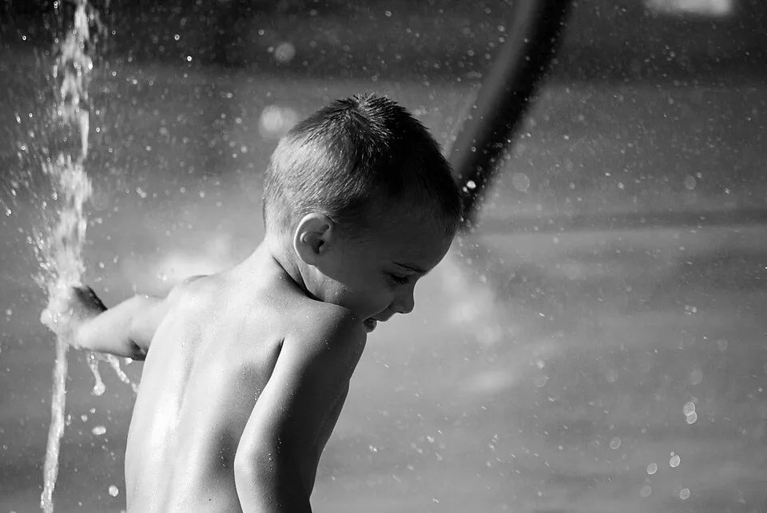

Big Sprinkler Rainbow Edge Walk
A garden sprinkler on a sunny morning: stand at the edge of its mist, watch for the rainbow it sometimes keeps, and take one slow walk through the edge.
Ages 3–310–20 min3 materials
- Ages
- 3–3
- Group
- 3–12 kids
- Time
- 10–20 min
- Where
- Outdoors
- Prep
- Some prep needed

Setup
Set the sprinkler up and stand in its weather yourself before anyone is invited: the water must fall as rain, not needles, if the pressure stings your forearm, turn it down or change the head, because a sprinkler that hurts teaches flinching, not summer. Find the watching spot with your own back to the sun and the mist in front of you, and stay there a full minute: the rainbow in sprinkler mist is shy and low, near the ground at the mist's sunlit edge, and it comes and goes, if the morning gives you none in your test minute, the record still runs (the watching and the walking are the record; the rainbow is its honoured guest, named as 'sometimes'), but the adult must know which kind of morning it is before promising anything to three-year-olds. Mark the watching line and the walking path with the towels: in, through the edge, out, dry.
Materials
- one garden sprinkler and hose, adult-settled (a gentle oscillating or dome sprinkler, soft rain, not a jet; tested by the adult's own hand and face before the group arrives)
- a sunny morning and the sun in the right place (the rainbow only keeps its appointment when the sun is behind the watchers and the mist is in front. The adult has stood in the watching spot and checked)
- a dry towel line at the watching edge (the shore, where walkers come out to dry and tell)
Steps
- Walk the group to the watching line, backs to the sun as you have arranged them, and say the plain framing: 'Summer makes the sun strong and the water welcome. That sprinkler is making rain in one small place, our own weather. Watch its mist: on a morning like this, with the sun behind us, the mist sometimes keeps a rainbow, low, small, and only there while you look at it.' State the laws whole: 'We watch from the line. Walkers walk through the EDGE of the mist, one at a time, at walking pace. Nobody runs at water. Faces may get wet; eyes that don't like it may close, and hands may shield. Coming out is always allowed, at any point, by simply walking out.'
- First watching together: a full quiet minute at the line, the adult narrating only what is true: 'The rain goes up... and comes down in its place. The grass inside is dark where it has drunk.' Then the rainbow hunt, run honestly: the group looks low, at the mist's bright edge, and if the colours are there the finding belongs to whoever's eye finds them first. The adult stoops to that child's height and looks down their pointing arm before confirming, because a rainbow reported must be a rainbow seen. If the morning keeps no rainbow, the adult says so in the open, with the record's standing line: 'No rainbow today. The mist is keeping it. Rainbows are not ours to order. The rain is still ours.'
- Edge-walk round: walkers take the path one at a time, step into the mist's edge at walking pace, through the falling summer rain for three or four slow steps, and out to the shore, while the line watches each crossing the way crowds watch fountains: with commentary. The reports collect in the session's official shape: 'It was RAINING on me.' 'It was cold and then it was nice.' 'I went through the whole weather.' A walker who stops at the edge, dips one hand in, and calls that their crossing has crossed at their size, and the record says so: 'The edge is part of the weather. A hand in the rain is in the rain.'
- Rainbow-second-chance stretch, once the walking has settled the group: back to the line, backs to the sun, one more looking minute. The light will have moved a fraction and mist-rainbows reward a second look often enough that the record always takes one. A rainbow found on the second look is celebrated at double size, and the reason is said out loud because it is the summer curriculum itself: 'We looked, and it wasn't there. We did other things. We looked again, and it was. That is how summer works: the good things come back round if you keep looking.'
- Finish with the sprinkler turned off by the day's chosen keeper, the tap turned with the adult's hand near, the last rain falling out of the pipe while the group watches the weather end, and the shore tell-back said over the towels: 'Our rain fell in one place, on our grass, and everybody who wanted it walked through a whole summer shower in four steps. The rainbow came when it came. The sun is still up. So are we.' Wet walkers dry at the shore, in order, and dry clothes are changed before the group goes in. Summer records end warm and dry.
Variations
Easier: A watching-only version: no walking, two rainbow hunts and the full weather commentary inside ten minutes, for a group in clothes that must stay dry.
Harder: A bare-feet version (safe grass, checked by the adult's own feet first): the edge walk done barefoot, adding the grass's whole report, wet, tickly, cold between the toes, to the crossings.
⚠️ Safety
Sprinkler water is garden water, not drinking water, and the record says so once: faces may be wet, mouths stay closed in the mist, and nobody drinks from the head or the hose. The sprinkler is a gentle-rain head at low pressure, tested on the adult's forearm and face first, a jet that stings never meets the group. The walking path crosses grass the adult has walked barefoot-ahead-of-time for stones, holes, and anything the grass is hiding; walkers walk, always. Wet grass plus running is this record's one fall, designed out by pace, not by luck. Sun is the session's other honest material: the watching line stands where the adult has put it, hats and shade breaks belong to the morning's ordinary rules, and the session ends before the sun is high. Hoses lie flat where feet are not, and the tap is the adult's and the chosen keeper's together, never a lone child's.
🤝 Inclusion notes
The edge is a wide place: a crossing can be a whole walk through, one hand dipped from the line, a face turned up at the very edge from a seat set at mist's reach, or a crossing by direction. Coaching a partner's walk from the shore: 'in... you're IN the rain... out the other side!', with every report entering the day's telling at the same size. The rainbow hunt belongs to every eye equally and to some ears too: the mist's sound changes at its edge, and the sound-spotter's job, standing at the line and calling 'louder... softer...' as the sprinkler swings. Is one of the session's real instruments. The tap-keeper, who ends the weather, holds the morning's official last word from any position at the shore.
⭐ Tried this? Rate it
Your ratings live in this browser only. Nobody else can see them. There are no community ratings here; every star on this card is yours.
Rate this activity, add a note, or write a reflection
✏️ Quick reflection
Optional, saved with your rating, and exported with "📋 Copy my week".
Full activity card,